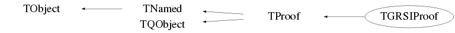

class TGRSIProof: public TProof
\class TGRSIProof This Class allows proof to work with GRSI
Function Members (Methods)
public:
| virtual | ~TGRSIProof() |
| void | TObject::AbstractMethod(const char* method) const |
| Int_t | TProof::ActivateWorker(const char* ord, Bool_t save = kTRUE) |
| void | TProof::AddChain(TChain* chain) |
| Int_t | TProof::AddDynamicPath(const char* libpath, Bool_t onClient = kFALSE, TList* wrks = 0, Bool_t doCollect = kTRUE) |
| static void | TProof::AddEnvVar(const char* name, const char* value) |
| void | TProof::AddFeedback(const char* name) |
| Int_t | TProof::AddIncludePath(const char* incpath, Bool_t onClient = kFALSE, TList* wrks = 0, Bool_t doCollect = kTRUE) |
| void | TProof::AddInput(TObject* obj) |
| void | TProof::AddInputData(TObject* obj, Bool_t push = kFALSE) |
| virtual void | TObject::AppendPad(Option_t* option = "") |
| Int_t | TProof::Archive(Int_t query, const char* url) |
| Int_t | TProof::Archive(const char* queryref, const char* url = 0) |
| static Bool_t | TQObject::AreAllSignalsBlocked() |
| Bool_t | TQObject::AreSignalsBlocked() const |
| static Bool_t | TQObject::BlockAllSignals(Bool_t b) |
| Bool_t | TQObject::BlockSignals(Bool_t b) |
| virtual void | TProof::Browse(TBrowser* b) |
| virtual Bool_t | TProof::CancelStagingDataSet(const char* dataset) |
| void | TProof::cd(Int_t id = -1) |
| virtual void | TQObject::ChangedBy(const char* method)SIGNAL |
| ULong_t | TObject::CheckedHash() |
| static TClass* | Class() |
| virtual const char* | TObject::ClassName() const |
| Int_t | TProof::CleanupSession(const char* sessiontag) |
| virtual void | TNamed::Clear(Option_t* option = "") |
| virtual void | TProof::ClearCache(const char* file = 0) |
| void | TProof::ClearData(UInt_t what = kUnregistered, const char* dsname = 0) |
| virtual void | TProof::ClearDataSetCache(const char* dataset = 0) |
| void | TProof::ClearFeedback() |
| void | TProof::ClearInput() |
| void | TProof::ClearInputData(TObject* obj = 0) |
| void | TProof::ClearInputData(const char* name) |
| Int_t | TProof::ClearPackage(const char* package) |
| Int_t | TProof::ClearPackages() |
| virtual TObject* | TNamed::Clone(const char* newname = "") const |
| void | TProof::Close(Option_t* option = "") |
| void | TProof::CloseProgressDialog()SIGNAL |
| void | TQObject::CollectClassSignalLists(TList& list, TClass* cls) |
| virtual Int_t | TNamed::Compare(const TObject* obj) const |
| Bool_t | TQObject::Connect(const char* signal, const char* receiver_class, void* receiver, const char* slot) |
| static Bool_t | TQObject::Connect(TQObject* sender, const char* signal, const char* receiver_class, void* receiver, const char* slot) |
| static Bool_t | TQObject::Connect(const char* sender_class, const char* signal, const char* receiver_class, void* receiver, const char* slot) |
| virtual void | TQObject::Connected(const char*) |
| virtual void | TNamed::Copy(TObject& named) const |
| TDrawFeedback* | TProof::CreateDrawFeedback() |
| void | TProof::DataSetStatus(const char* msg, Bool_t status, Int_t done, Int_t total)SIGNAL |
| Int_t | TProof::DeactivateWorker(const char* ord, Bool_t save = kTRUE) |
| static void | TProof::DelEnvVar(const char* name) |
| virtual void | TObject::Delete(Option_t* option = "")MENU |
| void | TProof::DeleteDrawFeedback(TDrawFeedback* f) |
| void | TProof::DeleteParameters(const char* wildcard) |
| virtual void | TQObject::Destroyed()SIGNAL |
| void | TProof::Detach(Option_t* opt = "") |
| void | TProof::DisableGoAsyn() |
| Bool_t | TQObject::Disconnect(const char* signal = 0, void* receiver = 0, const char* slot = 0) |
| static Bool_t | TQObject::Disconnect(TQObject* sender, const char* signal = 0, void* receiver = 0, const char* slot = 0) |
| static Bool_t | TQObject::Disconnect(const char* class_name, const char* signal, void* receiver = 0, const char* slot = 0) |
| virtual void | TQObject::Disconnected(const char*) |
| virtual Int_t | TObject::DistancetoPrimitive(Int_t px, Int_t py) |
| Int_t | TProof::DownloadPackage(const char* par, const char* dstdir = 0) |
| virtual void | TObject::Draw(Option_t* option = "") |
| virtual void | TObject::DrawClass() constMENU |
| virtual TObject* | TObject::DrawClone(Option_t* option = "") constMENU |
| virtual Long64_t | TProof::DrawSelect(TDSet* dset, const char* varexp, const char* selection = "", Option_t* option = "", Long64_t nentries = -1, Long64_t firstentry = 0) |
| Long64_t | TProof::DrawSelect(const char* dsetname, const char* varexp, const char* selection = "", Option_t* option = "", Long64_t nentries = -1, Long64_t firstentry = 0, TObject* enl = 0) |
| virtual void | TObject::Dump() constMENU |
| virtual Int_t | TProof::Echo(const TObject* obj) |
| virtual Int_t | TProof::Echo(const char* str) |
| void | TQObject::Emit(const char* signal) |
| void | TQObject::Emit<bool>(const char* signal, const bool& arg) |
| void | TQObject::Emit<char *>(const char* signal, char*const& arg) |
| void | TQObject::Emit<const char *>(const char* signal, const char*const& arg) |
| void | TQObject::Emit<int>(const char* signal, const int& arg) |
| void | TQObject::Emit<long>(const char* signal, const long& arg) |
| void | TQObject::Emit<TGShutterItem *>(const char* signal, TGShutterItem*const& arg) |
| void | TQObject::Emit<unsigned long>(const char* signal, const unsigned long& arg) |
| void | TQObject::EmitVA<>(const char* signal_name, Int_t) |
| void | TQObject::EmitVA<bool>(const char* signal_name, Int_t, const bool& params) |
| void | TQObject::EmitVA<char *>(const char* signal_name, Int_t, char*const& params) |
| void | TQObject::EmitVA<const char *>(const char* signal_name, Int_t, const char*const& params) |
| void | TQObject::EmitVA<int>(const char* signal_name, Int_t, const int& params) |
| void | TQObject::EmitVA<long>(const char* signal_name, Int_t, const long& params) |
| void | TQObject::EmitVA<TGShutterItem *>(const char* signal_name, Int_t, TGShutterItem*const& params) |
| void | TQObject::EmitVA<unsigned long>(const char* signal_name, Int_t, const unsigned long& params) |
| Int_t | TProof::EnablePackage(const char* package, Bool_t notOnClient = kFALSE, TList* workers = 0) |
| Int_t | TProof::EnablePackage(const char* package, const char* loadopts, Bool_t notOnClient = kFALSE, TList* workers = 0) |
| Int_t | TProof::EnablePackage(const char* package, TList* loadopts, Bool_t notOnClient = kFALSE, TList* workers = 0) |
| virtual void | TObject::Error(const char* method, const char* msgfmt) const |
| Int_t | TProof::Exec(const char* cmd, Bool_t plusMaster = kFALSE) |
| Int_t | TProof::Exec(const char* cmd, const char* ord, Bool_t logtomacro = kFALSE) |
| virtual void | TObject::Execute(const char* method, const char* params, Int_t* error = 0) |
| virtual void | TObject::Execute(TMethod* method, TObjArray* params, Int_t* error = 0) |
| virtual void | TObject::ExecuteEvent(Int_t event, Int_t px, Int_t py) |
| virtual Bool_t | TProof::ExistsDataSet(const char* dataset) |
| virtual void | TObject::Fatal(const char* method, const char* msgfmt) const |
| void | TProof::Feedback(TList* objs)SIGNAL |
| virtual void | TNamed::FillBuffer(char*& buffer) |
| Long64_t | TProof::Finalize(Int_t query = -1, Bool_t force = kFALSE) |
| Long64_t | TProof::Finalize(const char* queryref, Bool_t force = kFALSE) |
| TList* | TProof::FindDataSets(const char* searchString, const char* optStr = "") |
| virtual TObject* | TObject::FindObject(const char* name) const |
| virtual TObject* | TObject::FindObject(const TObject* obj) const |
| Long64_t | TProof::GetBytesRead() const |
| Int_t | TProof::GetClientProtocol() const |
| const char* | TProof::GetConfDir() const |
| const char* | TProof::GetConfFile() const |
| Float_t | TProof::GetCpuTime() const |
| const char* | TProof::GetDataPoolUrl() const |
| virtual TFileCollection* | TProof::GetDataSet(const char* dataset, const char* optStr = "") |
| TMap* | TProof::GetDataSetQuota(const char* optStr = "") |
| virtual TMap* | TProof::GetDataSets(const char* uri = "", const char* optStr = "") |
| virtual Option_t* | TObject::GetDrawOption() const |
| static Long_t | TObject::GetDtorOnly() |
| TString | TProof::Getenv(const char* env, const char* ord = "0") |
| static const TList* | TProof::GetEnvVars() |
| TList* | TProof::GetFeedbackList() const |
| const char* | TProof::GetGroup() const |
| virtual const char* | TObject::GetIconName() const |
| const char* | TProof::GetImage() const |
| TList* | TProof::GetInputList() |
| TMacro* | TProof::GetLastLog() |
| TList* | TQObject::GetListOfClassSignals() const |
| TList* | TQObject::GetListOfConnections() const |
| TList* | TProof::GetListOfEnabledPackages() |
| TList* | TProof::GetListOfPackages() |
| virtual TList* | TProof::GetListOfQueries(Option_t* opt = "") |
| TList* | TQObject::GetListOfSignals() const |
| TList* | TProof::GetListOfSlaveInfos() |
| TList* | TProof::GetLoadedMacros() const |
| void | TProof::GetLog(Int_t start = -1, Int_t end = -1) |
| Int_t | TProof::GetLogLevel() const |
| TMacro* | TProof::GetMacroLog() |
| TProofMgr* | TProof::GetManager() |
| const char* | TProof::GetMaster() const |
| void | TProof::GetMaxQueries() |
| TFileCollection* | TProof::GetMissingFiles(TQueryResult* qr = 0) |
| virtual const char* | TNamed::GetName() const |
| Int_t | TProof::GetNumberOfDrawQueries() |
| Int_t | TProof::GetNumberOfQueries() |
| virtual char* | TObject::GetObjectInfo(Int_t px, Int_t py) const |
| static Bool_t | TObject::GetObjectStat() |
| virtual Option_t* | TObject::GetOption() const |
| TObject* | TProof::GetOutput(const char* name) |
| static TObject* | TProof::GetOutput(const char* name, TList* out) |
| TList* | TProof::GetOutputList() |
| TList* | TProof::GetOutputNames() |
| Int_t | TProof::GetParallel() const |
| TObject* | TProof::GetParameter(const char* par) const |
| static Int_t | TProof::GetParameter(TCollection* c, const char* par, TString& value) |
| static Int_t | TProof::GetParameter(TCollection* c, const char* par, Int_t& value) |
| static Int_t | TProof::GetParameter(TCollection* c, const char* par, Long_t& value) |
| static Int_t | TProof::GetParameter(TCollection* c, const char* par, Long64_t& value) |
| static Int_t | TProof::GetParameter(TCollection* c, const char* par, Double_t& value) |
| Int_t | TProof::GetPort() const |
| TProof::EQueryMode | TProof::GetQueryMode(Option_t* mode = 0) const |
| TQueryResult* | TProof::GetQueryResult(const char* ref = 0) |
| TList* | TProof::GetQueryResults() |
| Int_t | TProof::GetRC(const char* RCenv, Int_t& env, const char* ord = "0") |
| Int_t | TProof::GetRC(const char* RCenv, Double_t& env, const char* ord = "0") |
| Int_t | TProof::GetRC(const char* RCenv, TString& env, const char* ord = "0") |
| Float_t | TProof::GetRealTime() const |
| Int_t | TProof::GetRemoteProtocol() const |
| TProof::ERunStatus | TProof::GetRunStatus() const |
| Int_t | TProof::GetSeqNum() const |
| Int_t | TProof::GetSessionID() const |
| const char* | TProof::GetSessionTag() const |
| virtual TFileCollection* | TProof::GetStagingStatusDataSet(const char* dataset) |
| void | TProof::GetStatistics(Bool_t verbose = kFALSE) |
| Int_t | TProof::GetStatus() const |
| virtual const char* | TNamed::GetTitle() const |
| virtual TTree* | TProof::GetTreeHeader(TDSet* tdset) |
| virtual UInt_t | TObject::GetUniqueID() const |
| const char* | TProof::GetUrl() |
| const char* | TProof::GetUser() const |
| const char* | TProof::GetWorkDir() const |
| void | TProof::GoAsynchronous() |
| virtual Bool_t | TObject::HandleTimer(TTimer* timer) |
| virtual Bool_t | TQObject::HasConnection(const char* signal_name) const |
| virtual ULong_t | TNamed::Hash() const |
| Bool_t | TObject::HasInconsistentHash() const |
| virtual void | TQObject::HighPriority(const char* signal_name, const char* slot_name = 0) |
| virtual void | TObject::Info(const char* method, const char* msgfmt) const |
| virtual Bool_t | TObject::InheritsFrom(const char* classname) const |
| virtual Bool_t | TObject::InheritsFrom(const TClass* cl) const |
| virtual void | TObject::Inspect() constMENU |
| void | TObject::InvertBit(UInt_t f) |
| virtual TClass* | IsA() const |
| Bool_t | TProof::IsDataReady(Long64_t& totalbytes, Long64_t& bytesready) |
| virtual Bool_t | TObject::IsEqual(const TObject* obj) const |
| virtual Bool_t | TProof::IsFolder() const |
| Bool_t | TProof::IsIdle() const |
| Bool_t | TProof::IsLite() const |
| Bool_t | TProof::IsMaster() const |
| Bool_t | TObject::IsOnHeap() const |
| Bool_t | TProof::IsParallel() const |
| Bool_t | TProof::IsProofd() const |
| virtual Bool_t | TNamed::IsSortable() const |
| Bool_t | TProof::IsTty() const |
| Bool_t | TProof::IsValid() const |
| Bool_t | TProof::IsWaiting() const |
| Bool_t | TObject::IsZombie() const |
| virtual Int_t | TProof::Load(const char* macro, Bool_t notOnClient = kFALSE, Bool_t uniqueOnly = kTRUE, TList* wrks = 0) |
| void | LoadLibsIntoProof() |
| void | TProof::LogMessage(const char* msg, Bool_t all)SIGNAL |
| static void | TProof::LogViewer(const char* url = 0, Int_t sessionidx = 0) |
| virtual void | TQObject::LowPriority(const char* signal_name, const char* slot_name = 0) |
| virtual void | TNamed::ls(Option_t* option = "") const |
| void | TObject::MayNotUse(const char* method) const |
| virtual void | TQObject::Message(const char* msg)SIGNAL |
| static TProofMgr* | TProof::Mgr(const char* url) |
| virtual Bool_t | TObject::Notify() |
| virtual Int_t | TQObject::NumberOfConnections() const |
| virtual Int_t | TQObject::NumberOfSignals() const |
| void | TObject::Obsolete(const char* method, const char* asOfVers, const char* removedFromVers) const |
| static TGRSIProof* | Open(const char* worker = "") |
| void | TObject::operator delete(void* ptr) |
| void | TObject::operator delete(void* ptr, void* vp) |
| void | TObject::operator delete[](void* ptr) |
| void | TObject::operator delete[](void* ptr, void* vp) |
| void* | TObject::operator new(size_t sz) |
| void* | TObject::operator new(size_t sz, void* vp) |
| void* | TObject::operator new[](size_t sz) |
| void* | TObject::operator new[](size_t sz, void* vp) |
| TGRSIProof& | operator=(const TGRSIProof&) |
| virtual void | TObject::Paint(Option_t* option = "") |
| Int_t | TProof::Ping() |
| virtual void | TObject::Pop() |
| virtual void | TProof::Print(Option_t* option = "") const |
| virtual Long64_t | TProof::Process(const char* selector, Long64_t nentries, Option_t* option = "") |
| virtual Long64_t | TProof::Process(TSelector* selector, Long64_t nentries, Option_t* option = "") |
| virtual Long64_t | TProof::Process(TDSet* dset, const char* selector, Option_t* option = "", Long64_t nentries = -1, Long64_t firstentry = 0) |
| virtual Long64_t | TProof::Process(TFileCollection* fc, const char* selector, Option_t* option = "", Long64_t nentries = -1, Long64_t firstentry = 0) |
| virtual Long64_t | TProof::Process(TDSet* dset, TSelector* selector, Option_t* option = "", Long64_t nentries = -1, Long64_t firstentry = 0) |
| virtual Long64_t | TProof::Process(TFileCollection* fc, TSelector* selector, Option_t* option = "", Long64_t nentries = -1, Long64_t firstentry = 0) |
| virtual Long64_t | TProof::Process(const char* dsetname, const char* selector, Option_t* option = "", Long64_t nentries = -1, Long64_t firstentry = 0, TObject* enl = 0) |
| virtual Long64_t | TProof::Process(const char* dsetname, TSelector* selector, Option_t* option = "", Long64_t nentries = -1, Long64_t firstentry = 0, TObject* enl = 0) |
| void | TProof::Progress(Long64_t total, Long64_t processed)SIGNAL |
| void | TProof::Progress(Long64_t total, Long64_t processed, Long64_t bytesread, Float_t initTime, Float_t procTime, Float_t evtrti, Float_t mbrti)SIGNAL |
| void | TProof::Progress(Long64_t total, Long64_t processed, Long64_t bytesread, Float_t initTime, Float_t procTime, Float_t evtrti, Float_t mbrti, Int_t actw, Int_t tses, Float_t eses)SIGNAL |
| void | TProof::PutLog(TQueryResult* qr) |
| void | TProof::QueryResultReady(const char* ref)SIGNAL |
| virtual Int_t | TObject::Read(const char* name) |
| virtual void | TObject::RecursiveRemove(TObject* obj) |
| virtual Bool_t | TProof::RegisterDataSet(const char* name, TFileCollection* dataset, const char* optStr = "") |
| Int_t | TProof::Remove(Int_t query, Bool_t all = kFALSE) |
| Int_t | TProof::Remove(const char* queryref, Bool_t all = kFALSE) |
| void | TProof::RemoveChain(TChain* chain) |
| virtual Int_t | TProof::RemoveDataSet(const char* dataset, const char* optStr = "") |
| Int_t | TProof::RemoveDynamicPath(const char* libpath, Bool_t onClient = kFALSE) |
| void | TProof::RemoveFeedback(const char* name) |
| Int_t | TProof::RemoveIncludePath(const char* incpath, Bool_t onClient = kFALSE) |
| virtual Bool_t | TProof::RequestStagingDataSet(const char* dataset) |
| static void | TProof::Reset(const char* url, Bool_t hard = kFALSE) |
| void | TObject::ResetBit(UInt_t f) |
| static void | TProof::ResetEnvVars() |
| void | TProof::ResetProgressDialog(const char* sel, Int_t sz, Long64_t fst, Long64_t ent)SIGNAL |
| void | TProof::ResetProgressDialogStatus() |
| Int_t | TProof::Retrieve(Int_t query, const char* path = 0) |
| Int_t | TProof::Retrieve(const char* queryref, const char* path = 0) |
| virtual void | TObject::SaveAs(const char* filename = "", Option_t* option = "") constMENU |
| Int_t | TProof::SavePerfTree(const char* pf = 0, const char* qref = 0) |
| virtual void | TObject::SavePrimitive(ostream& out, Option_t* option = "") |
| void | TProof::SendDataSetStatus(const char* msg, UInt_t n, UInt_t tot, Bool_t st) |
| Bool_t | TProof::SendingLogToWindow() const |
| void | TProof::SendLogToWindow(Bool_t mode) |
| void | TProof::SetActive(Bool_t = kTRUE) |
| virtual void | TProof::SetAlias(const char* alias = "") |
| void | TObject::SetBit(UInt_t f) |
| void | TObject::SetBit(UInt_t f, Bool_t set) |
| void | TProof::SetDataPoolUrl(const char* url) |
| virtual Int_t | TProof::SetDataSetTreeName(const char* dataset, const char* treename) |
| void | TProof::SetDrawFeedbackOption(TDrawFeedback* f, Option_t* opt) |
| virtual void | TObject::SetDrawOption(Option_t* option = "")MENU |
| static void | TObject::SetDtorOnly(void* obj) |
| void | TProof::SetInputDataFile(const char* datafile) |
| void | TProof::SetLogLevel(Int_t level, UInt_t mask = TProofDebug::kAll) |
| void | TProof::SetManager(TProofMgr* mgr) |
| void | TProof::SetMaxDrawQueries(Int_t max) |
| virtual void | TNamed::SetName(const char* name)MENU |
| virtual void | TNamed::SetNameTitle(const char* name, const char* title) |
| static void | TObject::SetObjectStat(Bool_t stat) |
| Int_t | TProof::SetParallel(Int_t nodes = -1, Bool_t random = kFALSE) |
| void | TProof::SetParameter(const char* par, const char* value) |
| void | TProof::SetParameter(const char* par, Int_t value) |
| void | TProof::SetParameter(const char* par, Long_t value) |
| void | TProof::SetParameter(const char* par, Long64_t value) |
| void | TProof::SetParameter(const char* par, Double_t value) |
| void | TProof::SetPerfTree(const char* pf = "perftree.root", Bool_t withWrks = kFALSE) |
| void | TProof::SetPrintProgress(PrintProgress_t pp) |
| void | TProof::SetProgressDialog(Bool_t on = kTRUE) |
| void | TProof::SetQueryMode(TProof::EQueryMode mode) |
| void | TProof::SetRealTimeLog(Bool_t on = kTRUE) |
| virtual void | TNamed::SetTitle(const char* title = "")MENU |
| virtual void | TObject::SetUniqueID(UInt_t uid) |
| virtual void | TProof::ShowCache(Bool_t all = kFALSE) |
| virtual void | TProof::ShowData() |
| void | TProof::ShowDataSet(const char* dataset = "", const char* opt = "filter:SsCc") |
| virtual void | TProof::ShowDataSetCache(const char* dataset = 0) |
| void | TProof::ShowDataSetQuota(Option_t* opt = 0) |
| virtual void | TProof::ShowDataSets(const char* uri = "", const char* optStr = "") |
| void | TProof::ShowEnabledPackages(Bool_t all = kFALSE) |
| void | TProof::ShowFeedback() const |
| void | TProof::ShowLog(Int_t qry = -1) |
| void | TProof::ShowLog(const char* queryref) |
| virtual void | ShowMembers(TMemberInspector& insp) const |
| void | TProof::ShowMissingFiles(TQueryResult* qr = 0) |
| void | TProof::ShowPackages(Bool_t all = kFALSE, Bool_t redirlog = kFALSE) |
| void | TProof::ShowParameters(const char* wildcard = "PROOF_*") const |
| void | TProof::ShowQueries(Option_t* opt = "") |
| virtual void | TProof::ShowStagingStatusDataSet(const char* dataset, const char* optStr = "filter:SsCc") |
| virtual Int_t | TNamed::Sizeof() const |
| void | TProof::StartupMessage(const char* msg, Bool_t status, Int_t done, Int_t total)SIGNAL |
| void | TProof::StopProcess(Bool_t abort, Int_t timeout = -1) |
| virtual void | Streamer(TBuffer&) |
| void | StreamerNVirtual(TBuffer& ClassDef_StreamerNVirtual_b) |
| virtual void | TObject::SysError(const char* method, const char* msgfmt) const |
| Bool_t | TObject::TestBit(UInt_t f) const |
| Int_t | TObject::TestBits(UInt_t f) const |
| TGRSIProof() | |
| TGRSIProof(const TGRSIProof&) | |
| void | TProof::Touch() |
| Int_t | TProof::UploadDataSet(const char*, TList*, const char* = 0, Int_t = 0, TList* = 0) |
| Int_t | TProof::UploadDataSet(const char*, const char*, const char* = 0, Int_t = 0, TList* = 0) |
| Int_t | TProof::UploadDataSetFromFile(const char*, const char*, const char* = 0, Int_t = 0, TList* = 0) |
| Int_t | TProof::UploadPackage(const char* par, TProof::EUploadPackageOpt opt = kUntar, TList* workers = 0) |
| virtual void | TObject::UseCurrentStyle() |
| Bool_t | TProof::UseDynamicStartup() const |
| virtual Int_t | TProof::VerifyDataSet(const char* dataset, const char* optStr = "") |
| virtual void | TObject::Warning(const char* method, const char* msgfmt) const |
| virtual Int_t | TObject::Write(const char* name = 0, Int_t option = 0, Int_t bufsize = 0) |
| virtual Int_t | TObject::Write(const char* name = 0, Int_t option = 0, Int_t bufsize = 0) const |
protected:
| Int_t | TProof::AddWorkers(TList* wrks) |
| static Int_t | TProof::AssertDataSet(TDSet* dset, TList* input, TDataSetManager* mgr, TString& emsg) |
| static void | TProof::AssertMacroPath(const char* macro) |
| Int_t | TProof::AssertPath(const char* path, Bool_t writable) |
| static Int_t | TQObject::CheckConnectArgs(TQObject* sender, TClass* sender_class, const char* signal, TClass* receiver_class, const char* slot) |
| Int_t | TProof::Collect(TProof::ESlaves list = kActive, Long_t timeout = -1, Int_t endtype = -1, Bool_t deactonfail = kFALSE) |
| Int_t | TProof::Collect(TList* slaves, Long_t timeout = -1, Int_t endtype = -1, Bool_t deactonfail = kFALSE) |
| static TString | TQObject::CompressName(const char* method_name) |
| static Bool_t | TQObject::ConnectToClass(TQObject* sender, const char* signal, TClass* receiver_class, void* receiver, const char* slot) |
| static Bool_t | TQObject::ConnectToClass(const char* sender_class, const char* signal, TClass* receiver_class, void* receiver, const char* slot) |
| TSlave* | TProof::CreateSlave(const char* url, const char* ord, Int_t perf, const char* image, const char* workdir) |
| TSlave* | TProof::CreateSubmaster(const char* url, const char* ord, const char* image, const char* msd, Int_t nwk = 1) |
| virtual void | TObject::DoError(int level, const char* location, const char* fmt, va_list va) const |
| TList* | TProof::GetEnabledPackages() const |
| static Bool_t | TProof::GetFileInCmd(const char* cmd, TString& fn) |
| static Int_t | TProof::GetInputData(TList* input, const char* cachedir, TString& emsg) |
| TList* | TProof::GetListOfActiveSlaves() const |
| TVirtualProofPlayer* | TProof::GetPlayer() const |
| TPluginHandler* | TProof::GetProgressDialog() const |
| Int_t | TProof::GetSandbox(TString& sb, Bool_t assert = kFALSE, const char* rc = 0) |
| virtual void* | TQObject::GetSender() |
| virtual const char* | TQObject::GetSenderClassName() const |
| void | TProof::HandleLibIncPath(const char* what, Bool_t add, const char* dirs) |
| Int_t | TProof::HandleOutputOptions(TString& opt, TString& target, Int_t action) |
| Int_t | TProof::Init(const char* masterurl, const char* conffile, const char* confdir, Int_t loglevel, const char* alias = 0) |
| void | TProof::InitMembers() |
| virtual TVirtualProofPlayer* | TProof::MakePlayer(const char* player = 0, TSocket* s = 0) |
| void | TObject::MakeZombie() |
| virtual Int_t | TProof::PollForNewWorkers() |
| void | TProof::PrepareInputDataFile(TString& dataFile) |
| Int_t | TProof::RemoveWorkers(TList* wrks) |
| static Int_t | TProof::SaveInputData(TQueryResult* qr, const char* cachedir, TString& emsg) |
| virtual void | TProof::SaveWorkerInfo() |
| Int_t | TProof::SendFile(const char* file, Int_t opt = (kBinary | kForward | kCp | kCpBin), const char* rfile = 0, TSlave* sl = 0) |
| static Int_t | TProof::SendInputData(TQueryResult* qr, TProof* p, TString& emsg) |
| virtual void | TProof::SendInputDataFile() |
| void | TProof::SetDSet(TDSet* dset) |
| void | TProof::SetFeedback(TString& opt, TString& optfb, Int_t action) |
| void | TProof::SetPlayer(TVirtualProofPlayer* player) |
| void | TProof::SetupWorkersEnv(TList* wrks, Bool_t increasingpool = kFALSE) |
| static void* | TProof::SlaveStartupThread(void* arg) |
| virtual Bool_t | TProof::StartSlaves(Bool_t attach = kFALSE) |
| static void | TProof::SystemCmd(const char* cmd, Int_t fdout) |
| void | TProof::UpdateDialog() |
| virtual void | TProof::ValidateDSet(TDSet* dset) |
| Int_t | TProof::VerifyDataSetParallel(const char* uri, const char* optStr) |
private:
| virtual Bool_t | CheckTObjectHashConsistency() const |
Data Members
public:
protected:
| TMonitor* | TProof::fAllMonitor | monitor activity on all valid slave sockets |
| TList* | TProof::fAvailablePackages | list of available packages |
| TList* | TProof::fBadSlaves | dead slaves (subset of all slaves) |
| Long64_t | TProof::fBytesReady | number of bytes staged |
| Int_t | TProof::fCollectTimeout | Timeout for (some) collect actions |
| TString | TProof::fConfDir | directory containing cluster config information |
| TString | TProof::fConfFile | file containing config information |
| TString | TProof::fDataPoolUrl | default data pool entry point URL |
| Bool_t | TProof::fDataReady | true if data is ready to be analyzed |
| Bool_t | TProof::fDynamicStartup | are the workers started dynamically? |
| TList* | TProof::fEnabledPackages | list of enabled packages |
| TString | TProof::fImage | master's image name |
| TList* | TQObject::fListOfConnections | ! list of connections to this object |
| TList* | TQObject::fListOfSignals | ! list of signals from this object |
| TProofMgr* | TProof::fManager | manager to which this session belongs (if any) |
| Bool_t | TProof::fMasterServ | true if we are a master server |
| TString | TNamed::fName | object identifier |
| Float_t | TProof::fPrepTime | Preparation time |
| Int_t | TProof::fProtocol | remote PROOF server protocol version number |
| TProof::EQueryMode | TProof::fQueryMode | default query mode |
| TStopwatch | TProof::fQuerySTW | Stopwatch to measure query times |
| TList* | TProof::fRunningDSets | Temporary datasets used for async running |
| TSelector* | TProof::fSelector | Selector to be processed, if any |
| TProofMgr::EServType | TProof::fServType | type of server: proofd, XrdProofd |
| Bool_t | TQObject::fSignalsBlocked | ! flag used for suppression of signals |
| TList* | TProof::fSlaves | list of all slave servers as in config file |
| TList* | TProof::fTerminatedSlaveInfos | list of unique infos of terminated slaves |
| TString | TNamed::fTitle | object title |
| Long64_t | TProof::fTotalBytes | number of bytes to be analyzed |
| TUrl | TProof::fUrl | Url of the master |
| static Bool_t | TQObject::fgAllSignalsBlocked | flag used for suppression of all signals |
| static TProof::ESlaves | TProof::kActive | |
| static TProof::ESlaves | TProof::kAll | |
| static TProof::ESlaves | TProof::kAllUnique | |
| static TProof::ESlaves | TProof::kUnique |
Class Charts



Function documentation
TGRSIProof* Open(const char* worker = "")
p-> LoadLibsIntoProof()